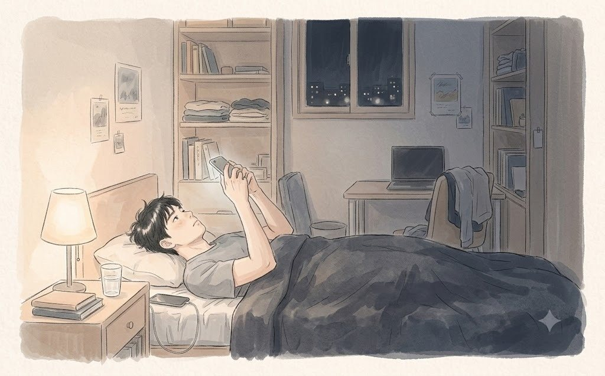
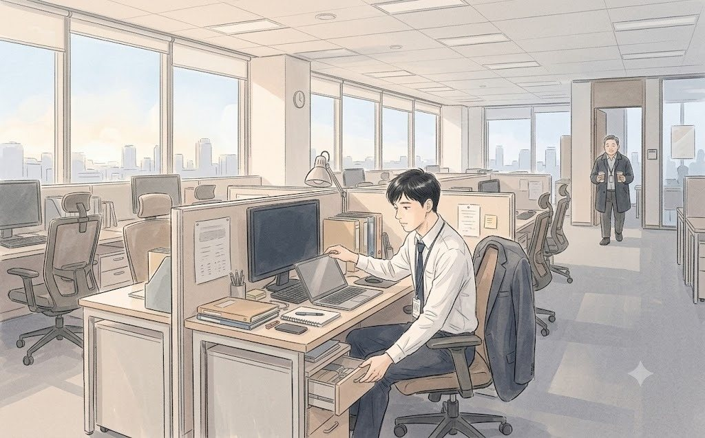
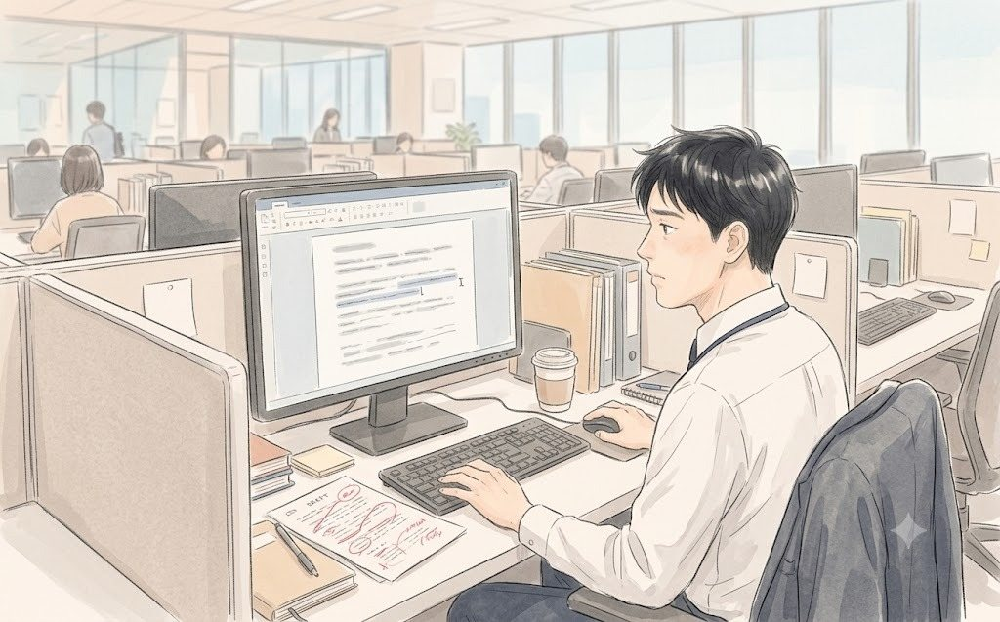

토요일 오전 9시 반. 다들 돌아간 상무실에 둘만 남았다.
권재혁이 넥타이를 풀어 책상에 던졌다. 회사에서는 절대 보이지 않는 동작이었다.
"승원아, 앉아."
백승원도 그제야 넥타이를 느슨하게 했다. 둘만 있을 때 권재혁은 반말을 했고, 백승원은 그를 형님이라고 불렀다. 15년 전 홍콩 출장길에서 처음 만나 밤새 술을 마신 뒤부터였다. 회사 안에서 이 사실을 아는 사람은 한지석 하나뿐이었다.
"형님, 오늘 그 침묵은 좀 길었습니다."
"알아."
"지석이가 입 열려고 했던 거, 형님이 막으셨죠."
"걔가 입 열면 이유가 열 개 나와. 다 맞는 얘기야. 그래서 막았어. 맞는 이유는 그 방에서 제일 위험하거든."
권재혁은 창밖을 봤다. 광화문 사거리가 내려다보였다. 토요일 아침의 광장은 텅 비어 있었다.
"승원아. 세 번이라고 한 거, 나 그거 못 지켜."
"압니다."
"다섯 번이면 잘한 거야. 그래도 사장님 앞에서는 세 번이라고 해야 했어."
"그럼 다음 주에 틀렸다고 하시면 되죠."
권재혁이 백승원을 돌아봤다.
"형님이 틀렸다고 하는 거, 사장님은 오히려 좋아하실걸요. 아무도 그 방에서 틀렸다고 안 하니까."
권재혁은 한참 백승원을 보다가 웃었다. 회의실에서는 한 번도 보이지 않던 웃음이었다.
"너는 그래서 아직 부장이야."
"형님은 그래서 상무시고요."
둘은 웃었다. 그리고 권재혁이 덧붙였다.
"근데 그 막내. 이 과장."
"우진이요?"
"걔 손 떨리는 거 봤어? 휴대폰 엄 상무한테 빌려줄 때."
"봤습니다."
"그래도 제일 먼저 꺼내 주더라."
권재혁은 그 말만 하고 다시 넥타이를 집어 들었다. 칭찬인지 아닌지, 백승원은 묻지 않았다. 이 형님에게서 나올 수 있는 칭찬은 대개 그 정도 길이였다.
일요일 밤 11시. 윤채원에게서 메시지가 왔다.
이우진은 침대에 누운 채 그 문장을 오래 들여다봤다. 「오월의 식탁」에서 재킷 안주머니에 손을 넣었다가 빼던 순간을, 그녀는 놓치지 않았다. 대학병원 응급실에서 7년을 버틴 간호사의 눈이었다.

그는 답을 쓰지 못했다. 다음 주 토요일에도 회의가 있었다. 그다음 주에도. 대화방 이름이 떠올랐다. 토요일 아침 7시 (1/52).
숫자 1이 사라지고, 한참 뒤에 답이 왔다.
월요일 아침 6시 50분. 이우진은 29층에 가장 먼저 도착했다. 자리에 앉자마자 책상 맨 아래 서랍을 열었다. 남색 상자는 그대로 있었다. 그는 상자를 열어 반지를 확인하고, 다시 닫고, 서랍을 밀어 넣었다. 회사에 반지를 두고 다니는 남자. 그게 지금의 자기였다.

노트북을 켜자 토요일의 회의록 초안이 떴다.
파일 이름은 '(회의록) 1차 온라인혁신회의 (210320)_v1.0'. 그는 그 파일을 열기 전에 복사본을 하나 만들었다. 회사에서 10년을 일하며 배운 게 있다면, 회의록은 절대 한 번에 끝나지 않는다는 것이었다.
커서가 한 줄에서 멈춰 있었다.
'미결 사항: 아홉 단계 발생 원인 — 답변 미흡'
"그건 적지 마라."
뒤에서 목소리가 들렸다. 백승원이었다. 그는 커피 두 잔을 들고 이우진의 모니터를 내려다보고 있었다. 언제부터 서 있었는지 알 수 없었다.
"부장님, 일찍 나오셨네요."
"너보다 일찍 나오면 상무님한테 혼나. 애들 일찍 나오게 만든다고."
백승원은 커피 한 잔을 내려놓고 의자를 끌어와 앉았다.
"'답변 미흡', 그거 지워."
"근데 사실이잖아요. 사장님이 왜냐고 물으셨는데, 아무도 대답 안 했어요."
"우진아. 이 회의록 누가 읽는지 알아?"
이우진은 배포 명단을 떠올렸다. 사장실, 대표이사실, 경영기획, 재무, 연휘사업부, 데일리뷰티사업부, IT플랫폼그룹. 열한 군데.
"열한 군데요."
"그 열한 군데가 그 네 글자를 다 다르게 읽어. 사장실은 '숙제가 남았구나', 대표실은 '준비가 안 됐구나', 연휘는 '저 사람 흔들리네'. 엄 상무님은 그 줄에 형광펜 칠할 거다."
"그래도 기록은 사실대로..."
"기록은 사실을 남기는 게 아니야."
백승원은 커피를 한 모금 마셨다.
"다음 회의를 남기는 거지."
이우진은 대답하지 못했다. 백승원의 말은 틀린 것 같으면서도 맞았다. 그리고 맞는 것 같으면서도 어딘가 불편했다.
오전 9시. 첫 번째 수정 요청이 왔다. 청연화장품 대표실의 차미정 비서였다.
"이 과장님, 회의록 초안 잘 봤어요. 대표님이 한 단어만 바꿔 달래요. 사장님 말씀 부분에 '질책'이라고 쓰신 거요."

"네."
"'당부'로 바꿔 주세요."
"사장님이 '그 여섯 번 사이에 몇 명이 나갈까요'라고 하신 게 당부인가요?"
수화기 너머에서 짧은 웃음이 났다.
"대표님 표현으로는 당부래요. 그리고 '대표이사: 본인 인증 진행 중'이라는 줄은 빼 달래요."
이우진은 그 줄을 지웠다. 대표이사가 자기 회사 쇼핑몰에서 인증 문자를 기다리던 장면은 회사 역사에서 사라졌다.
오전 10시 반. 두 번째 수정 요청. 연휘 사업부였다. 엄기태 상무의 비서가 메일을 보냈다.
오후 2시. 세 번째. 경영기획이었다.
점심시간. 구내식당에서 나서현이 이우진 맞은편에 식판을 내려놓았다.
"과장님, 회의록 지금 몇 번째 버전이에요?"
"다섯 번째."
"와."
나서현은 진심으로 감탄한 얼굴이었다. 뷰티 유튜버 시절, 그녀는 영상 하나를 올리기 전에 편집본을 두 번 이상 고친 적이 없다고 했다.
"소다랩 다니는 동기한테 들었는데요, 거기는 회의록이 없대요. 메신저 채널에 다 남아 있대요. 누가 무슨 말 했는지, 그대로."
"그럼 누가 고쳐 달라고 하면?"
"못 고쳐요. 수정하면 '수정됨' 표시가 떠요."
이우진은 숟가락을 멈췄다. 그런 회사가 있다는 게 잘 상상되지 않았다.
"근데 그러면 다들 말 조심하지 않아?"
"네. 그래서 회의가 짧대요. 15분."
옆자리에서 듣던 최윤아가 웃었다.
"서현 씨, 우리 회사가 그렇게 하면 회의가 0분 돼요. 아무도 말을 안 할 테니까."
세 사람은 웃었다. 이우진은 웃으면서도 생각했다. 말을 조심하는 회사와, 말한 뒤에 고치는 회사. 어느 쪽이 더 정직한 걸까.
오후 4시. 파일 이름은 '(회의록) 1차 온라인혁신회의 (210320)_v6.0'이 되어 있었다. 단어 하나를 고칠 때마다 숫자가 하나씩 올라갔다.
이우진은 v1.0과 v6.0을 나란히 띄웠다. v1.0에는 '셋', '아홉', '질책', '연휘 고객의 딸들', '답변 미흡'이 있었다. v6.0에는 '개선 여지', '당부', '고객층 확대'가 있었고, 미결 사항은 한 줄도 없었다.
두 문서는 같은 회의를 기록하고 있었다. 그런데 같은 회의 같지 않았다.
"회사 언어 배우는 중이구나."
한지석이 옆자리에서 모니터를 흘끗 보고 말했다.
"파트장님, 이게 맞아요?"
"맞고 틀리고가 어딨어. 다 이렇게 해."
"그럼 나중에 누가 이 회의록 보면, 그날 무슨 일이 있었는지 모르잖아요."
한지석은 잠시 손을 멈췄다.
"그래서 회사에는 회의록이 두 개야."
"두 개요?"
"하나는 공유 폴더에. 하나는..."
그는 자기 관자놀이를 손가락으로 두 번 두드렸다.
"여기에."
오후 5시. 이우진은 최종본을 권재혁에게 보냈다. 5분 뒤, 권재혁이 그를 방으로 불렀다.
상무실은 생각보다 좁았다. 책상 위에는 서류 대신 화장품 샘플이 놓여 있었다. 청연 제품 다섯 개, 소다랩과 민트앤 제품 다섯 개. 뚜껑이 다 열려 있었다.
"이 과장, 회의록 잘 봤어요."
"감사합니다."
"미결 사항이 빠졌네요."
이우진의 등에 땀이 뱄다.
"백 부장님이... 아니, 제가 판단해서..."
"백 부장이 빼라고 했겠죠. 그 사람은 늘 그래요. 남이 다칠 만한 건 먼저 치워요."
권재혁은 수분 크림 하나를 집어 손등에 발랐다. 소다랩 제품이었다.
"근데 이 과장. 사장님은 그 '왜'에 우리가 대답 못 한 걸 기억해요. 회의록에 그게 없으면, 우리가 지웠다는 것도 기억하시고요."
"그럼... 다시 넣을까요?"
"아뇨."
권재혁은 손등의 크림을 문질러 흡수시켰다. 그리고 이번에는 청연의 수결 크림을 다른 손등에 발랐다.
"이 과장이 정해요. 회의록은 이 과장 이름으로 나가잖아요."
이우진은 상무실을 나와 자리에 앉았다. 커서가 깜빡였다.
그는 v6.0의 맨 아래에 한 줄을 다시 넣었다.
'미결 사항: 아홉 단계 발생 원인 — 차주 보고 시 원인 분석 포함 예정'
'미흡'은 '예정'이 되었다. 사실이면서 사실이 아닌 말. 대답하지 못한 질문은 다음 주의 약속이 되었다. 그는 그 두 글자를 바꾸고 나서야 자기가 회사 언어를 처음으로 배웠다는 걸 알았다.
파일 이름을 바꿨다. '(회의록) 1차 온라인혁신회의 (210320)_v7.0'. 최종본이었다.
저녁 7시. 퇴근하려던 이우진은 상무실 문이 반쯤 열린 걸 봤다. 안에 한지석이 서 있었다. 권재혁의 목소리가 들렸다.
"한 차장, 오늘 저녁 시간 돼요?"
"네, 괜찮습니다."
"그 집 아직 있나 모르겠네. 회사 뒤에 있던 순댓국집. 돌담집."
한지석이 잠시 말이 없었다. 그리고 웃었다. 이우진이 처음 보는, 아주 오래된 사람을 만난 듯한 웃음이었다.
"있습니다. 주인은 바뀌었지만요."
"그럼 거기 가요. 12년 만이네."
(EP4 끝)